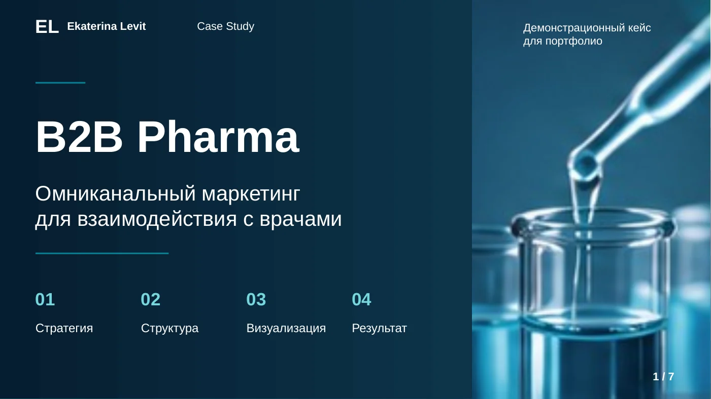
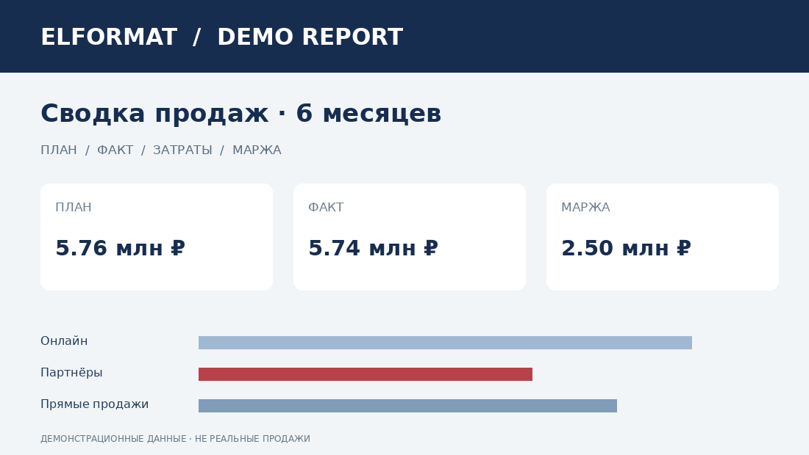
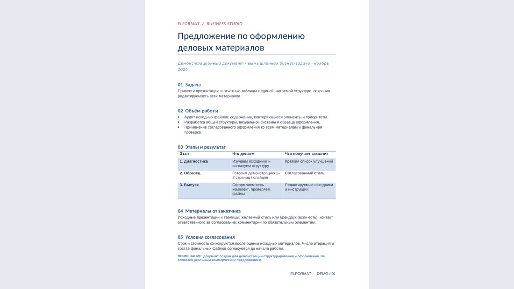

Сайты
Одностраничные сайты и лендинги для презентации услуг. Структура, дизайн, адаптивная версия и понятные действия для посетителя. ELFormat — действующий пример.
Смотреть пример ↗Сайты, презентации, аналитика и деловые документы — когда важны и содержание, и форма. Сайт, который вы просматриваете, — наш веб-кейс; ниже доступны примеры Excel и Word.
Хороший дизайн начинается с понимания задачи.
ELFormat помогает превращать сложные идеи и разрозненные материалы в ясные сайты, презентации, таблицы и деловые документы. Здесь вы можете увидеть, как мы работаем: сам сайт — пример веб-разработки, а остальные работы представлены в портфолио.
Смотреть работы ↗Бизнес-коммуникации · Маркетинг · Структура информации
Более 15 лет профессионального опыта в Нью-Йорке: работа с деловыми материалами, исследованиями и сложной документацией. Высшее образование в области маркетинга — Brooklyn College (CUNY).
В ELFormat этот опыт помогает соединять смысл и визуальную форму — чтобы результат был не только красивым, но и понятным для бизнеса.
Обсудить задачу ↗Четыре направления с конкретными примерами. Стоимость и сроки обсуждаем под задачу.
Одностраничные сайты и лендинги для презентации услуг. Структура, дизайн, адаптивная версия и понятные действия для посетителя. ELFormat — действующий пример.
Смотреть пример ↗PowerPoint и Google Slides: логика истории, визуальная подача, редактируемые слайды. Ниже — полный демонстрационный кейс B2B Pharma из семи слайдов.
Смотреть пример ↗Таблицы, формулы, проверка структуры данных, понятные отчёты и дашборды. Ниже — готовый редактируемый демо-отчёт с формулами и сводкой.
Посмотреть пример ↗Word: логичная структура, оглавление, таблицы, единый стиль отчётов и предложений. Ниже — готовый редактируемый образец и исходный текст «до».
Посмотреть пример ↗Четыре направления: этот сайт, семь настоящих слайдов B2B Pharma, редактируемый Excel и пример Word «до / после». Все примеры — демонстрационные.
Задача: показать несколько услуг в едином узнаваемом стиле. Решение: адаптивная страница с выразительным первым экраном, четырьмя направлениями, понятной навигацией и примерами работ. Этот сайт и есть работающий демонстрационный результат.
Композицию, контраст, навигацию, адаптивную верстку и структуру на этой же странице.

Увеличить ↗Демонстрационная презентация: бизнес-задача, причины неэффективной коммуникации, анализ и концепция единого профиля врача. Слайды редактируются в PowerPoint. Это учебный кейс, не коммерческий результат клиента.
Структуру истории, иерархию информации, диаграммы и визуальное решение «до / после». Все семь слайдов доступны для просмотра.

Увеличить ↗Шесть месяцев, три канала продаж: план, факт, затраты и маржа. Два листа с формулами. Все данные — учебные.
Откуда берутся показатели, где продажи отклоняются от плана и какие каналы дают маржу. Откройте XLSX и проверьте формулы.

Увеличить ↗Из разрозненных пожеланий — деловое предложение с ясной структурой, этапами и условиями. Ниже — сравнение исходника и результата.
Сравните не только внешний вид, но и организацию информации. Оба файла можно скачать.
Слева — исходные пожелания; справа — те же сведения в читабельной структуре. Оба файла можно скачать и сравнить.
Привести презентацию и отчётные таблицы к единой, читаемой структуре, сохранив редактируемость всех материалов.
Аудит исходных файлов → единая структура и образец → оформление и проверка комплекта.
| Этап | Результат |
|---|---|
| Диагностика | Список улучшений |
| Образец | Согласованный стиль |
| Выпуск | Редактируемые исходники |
Фрагмент того же демонстрационного Word. Для полной версии скачайте DOCX.
Excel, Word и B2B Pharma — демонстрационные кейсы. Показатели в Excel учебные; Pharma показывает концепцию, а не подтверждённые бизнес-результаты. Исходные файлы размещены для проверки навыков.
Меньше лишнего.
Больше смысла.
Понятные этапы, ясные ожидания и никаких неожиданностей по ходу работы.
Обсуждаем задачу, цели и исходные материалы.
Фиксируем объём, сроки и условия до начала работы.
Двигаемся по согласованным этапам и делимся прогрессом.
Передаём готовые материалы и согласованные инструкции.
Расскажите в двух словах, что вам нужно. Составьте короткое описание задачи и отправьте его в переписке, где получили ссылку на портфолио.
Выберите направление, добавьте задачу — и скопируйте короткое техническое описание. Его можно отправить в переписке на выбранной площадке.
Описание формируется в вашем браузере и не отправляется автоматически. Для связи используйте переписку, через которую получили ссылку на это портфолио.
Esc — закрыть · стрелки ← → — листать слайды · кнопка «Скачать» сохранит настоящий файл